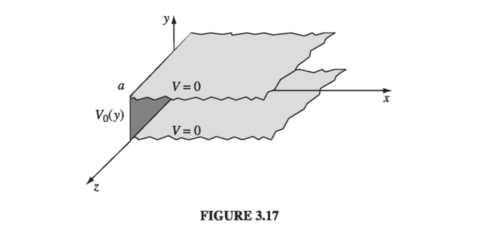
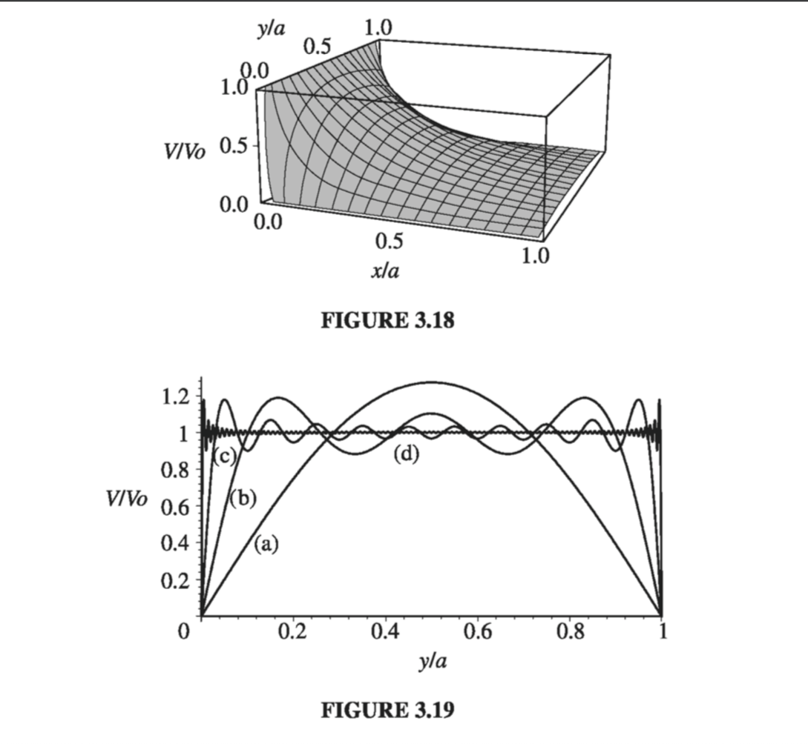
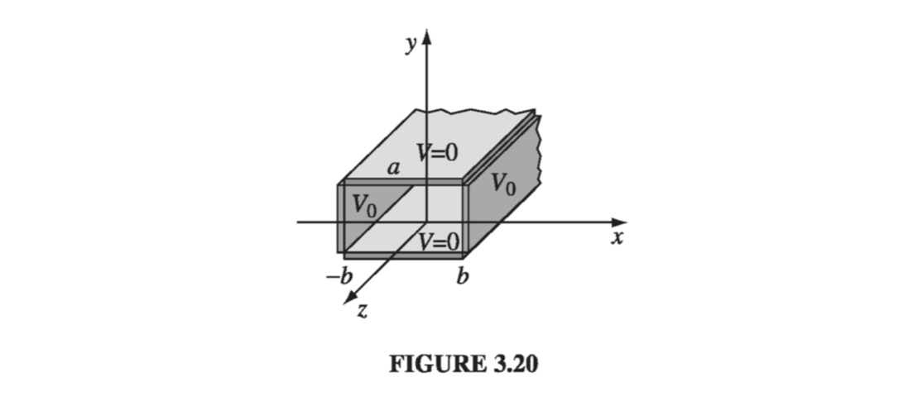
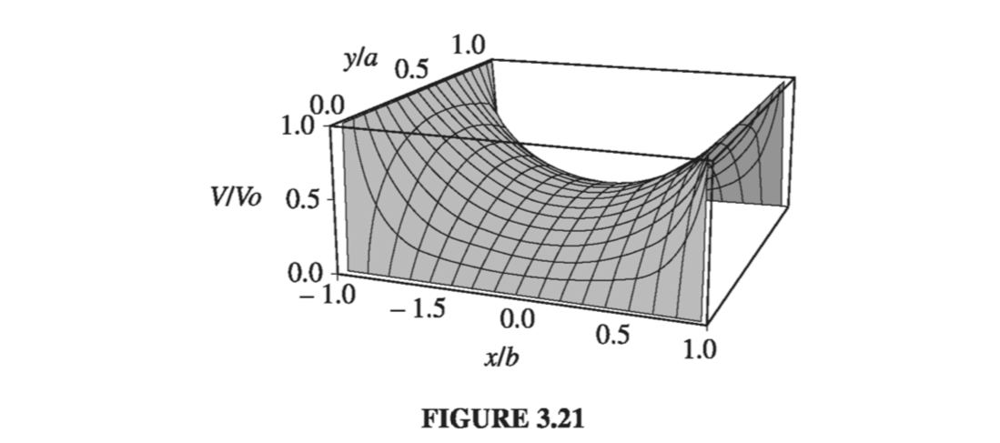
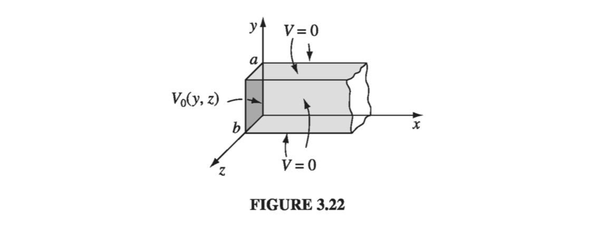
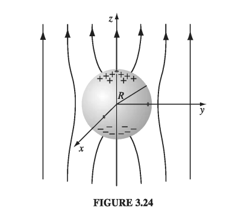

3.3: Separation of Variables#
In this section we shall attack Laplace’s equation directly, using the method of separation of variables, which is the physicist’s favorite tool for solving partial differential equations. The method is applicable in circumstances where the potential \( (V) \) or the charge density \( (\sigma) \) is specified on the boundaries of some region, and we are asked to find the potential in the interior. The basic strategy is very simple: We look for solutions that are products of functions, each of which depends on only one of the coordinates. The algebraic details, however, can be formidable, so I’m going to develop the method through a sequence of examples. We’ll start with Cartesian coordinates and then do spherical coordinates (I’ll leave the cylindrical case for you to tackle on your own, in Prob 3.24).
3.3.1: Cartesian Coordinates#
Two infinite grounded metal plates lie parallel to the \(xz\) plane, one at \( y = 0 \), the other at \( y = a \) (Fig. 3.17). The left end, at \( x = 0 \), is closed off with an infinite strip insulated from the two plates, and maintained at a specific potential \( V_0(y) \). Find the potential inside this ‘slot.’

The configuration is independent of \(z\), so this is really a two-dimensional problem. In mathematical terms, we must solve Laplace’s equation,
subject to the boundary conditions
(i) \( V = 0 \) when \( y = 0 \)
(ii) \( V = 0 \) when \( y = a \)
(iii) \( V = V_0(y) \) when \( x = 0 \)
(iv) \( V \rightarrow 0 \) as \( x \rightarrow \infty \)
(The latter, although not explicitly stated in the problem, is necessary on physical grounds: as you get farther and farther away from the “hot” strip at \( x = 0 \), the potential should drop to zero.) Since the potential is specified on all boundaries, the answer is uniquely determined.
The first step is to look for solutions in the form of products:
On the face of it, this is an absurd restriction - the overwhelming majority of solutions to Laplace’s equation do not have such a form. For example, \( V(x, y) = (5x + 6y) \) satisfies the equation, but you can’t express it as the product of a function of \(x\) times a function of \(y\). Obviously, we’re only going to get a tiny subset of all possible solutions by this means, and it would be a miracle if one of them happened to fit the boundary conditions of our problem… But hang on, because the solutions we do get are very special, and it turns out that by pasting them together we can construct the general solution.
Anyway, putting (161) into (160) we obtain
The next step is to “separate the variables” (that is, collect all the \(x\)-dependence into one term and all the \(y\)-dependence into another). Typically, this is accomplished by dividing through by \(V\):
Here the first term depends only on \(x\) and the second term only on \(y\); in other words, we have an equation of the form
Now, there’s only one way this could possibly be true: \(f\) and \(g\) must both be constant. For what if \( f(x) \) changed, as you vary \(x\) - then if we held \(y\) fixed and fiddled with \(x\), the sum \( f(x) + g(y) \) would change, in violation of (163), which says it’s always zero. (That’s a simple but somehow rather elusive argument; don’t accept it without due thought, because the whole method rides on it.)
It follows from (162), then, that
One of these constants is positive, the other negative (or perhaps both are zero). In general, one must investigate all possibilities; however in our particular problem we need \( C_1 \) positive and \( C_2 \) negative, for reasons that will appear in a moment. Thus
Notice what has happened: A partial differential equation has been converted into two ordinary differential equations. The advantage of this is obvious - ordinary differential equations are a lot easier to solve. Indeed:
so
This is the appropriate separable solution to Laplace’s equation; it remains to impose the boundary conditions, and see what they tell us about the constants. To begin at the end, condition (iv) requires tha \(A\) equal zero. Absorbing \(B\) into \(C\) and \(D\), we are left with
Condition (i) now demands that \(D\) equal zero
Meanwhile (ii) yields \( \sin ka = 0 \), from which it follows that
(At this point you can see why I chose \( C_1 \) positive and \( C_2 \) negative: If \(X\) were sinusoidal, we could never manage for it to go to zero at infinity, and if \(Y\) were exponential we could not make it vanish at both \(0\) and \(a\). Incidentally, \( n = 0 \) is no good, for in that case the potential vanishes everywhere. And we have already excluded negative \(n\)’s)
That’s as far as we can go, using separable solutions, and unless \( V_0(y) \) just happens to have the form \( \sin(n \pi / a) \) for some integer \(n\), we simply can’t fit the final boundary condition at \( x = 0 \). But now comes the crucial step that redeems the method: Separation of variables has given us an infinite family of solutions (one for each \(n\)), and whereas none of them by itself satisfies the final boundary condition, it is possible to combine them in a way that does. Laplace’s equation is linear, in the sense that if \( V_1, V_2, V_3, \ldots \) satisfy it, so does any linear combination, \(V = \alpha_1\nabla^2V_1 + \alpha_2\nabla^2V_2 + \dots = 0\alpha_1 + 0\alpha_2 + \dots\), where \(\alpha_1, \alpha_2, \dots\) are arbitrary constants. For
Exploiting this fact, we can patch together the separable solutions (167) to construct a much more general solution:
This still satisfies three of the boundary conditions; the question is, can we (by astute choice of the coefficients \( C_n \)) fit the final boundary condition (iii)?
Well, you may recognize this sum - it’s a Fourier sine series. And Dirichlet’s theorem guarantees that virtually any function \( V_0(y) \) - it can even have a finite number of discontinuities - can be expanded in such a series.
But how do we actually determine the coefficients \( C_n \), buried as they are in that infinite sum? The device for accomplishing this is so lovely it deserves a name - I call it Fourier’s trick, though it seems Euler had used essentially the same idea somewhat earlier. Here’s how it goes: Multiply (170) by \( \sin(n' \pi y /a) \) (where \( n' \) is a positive integer), and integrate from \(0\) to \(a\):
You can work out the integral on the left yourself; the answer is
Thus all the terms in the series drop out, save only the one where \( n = n' \), and the left side of (171) reduces to \( (a/2)C_{n'} \). Conclusion:
That does it: (169) is the solution, with coefficients given by (173). As a concrete example, suppose the strip at \( x = 0 \) is a metal plate with constant potential \( V_0 \) (remember, it’s insulated from the grounded plates at \( y = 0 \) and \( y = a \).) Then
Thus
Figure 3.18 is a plot of this potential; Fig. 3.19 shows how the first few terms in the Fourier series combine to make a better and better approximation to the constant \( V_0 \): (a) is the \( n=1 \) term only, (b) includes \(n\) up to 5, (c) is the sum of the first 10 terms, and (d) is the sum of the first 100 terms.

Incidentally, the infinite series in (175) can be summed explicitly (try your hand at it if you like); the result is
In this form, it is easy to check that Laplace’s equation is obeyed and the four boundary conditions are satisfied
The success of this method hinged on two extraordinary properties of the separable solutions (167) and (168): completeness and orthogonality. A set of functions \( f_n(y) \) is said to be complete if any other function \( f(y) \) can be expressed as a linear combination of them:
The functions \( \sin (n \pi y/a) \) are complete on the interval \( 0 \leq y \leq a \). It was this fact, guaranteed by Dirichlet’s theorem, that assured us (170) could be satisfied, given the proper choice of the coefficients \( C_n \). (The proof of completeness, for a particular set of functions, is an extremely difficult business, and I’m afraid physicists tend to assume it’s true and leave the checking to others.) A set of functions is orthogonal if the integral of the product of any two different members of the set is zero:
The sine functions are orthogonal (172); that is the property on which Fourier’s trick is based, allowing us to kill off all terms but one in the infinite series and thereby solve for the coefficients \( C_n \) (Proof of orthogonality is generally quite simple, either by direct integration or by analysis of the differential equation from which the functions came.)
Two infinitely-long grounded metal plates, again at \( y=0 \) and \( y=a \) are connected at \( x= \pm b \) by metal strips maintained at a constant potential \( V_0 \), as shown in Fig. 3.20 (a thin layer of insulation at each corner prevents them from shorting out). Find the potential inside the resulting rectangular pipe.

Once again, the configuration is independent of \(z\). Our problem is to solve Laplace’s equation
subject to the boundary conditions
(i) \( V = 0 \) when \( y = 0 \)
(ii) \( V = 0 \) when \( y = a \)
(iii) \( V = V_0 \) when \( x = b \)
(iv) \( V = V_0 \) when \( x = -b \)
The argument runs as before, up to (166):
This time, however, we cannot set \( A = 0 \); the region in question does not extend to \( x = \infty \), so \( e^{kx} \) is perfectly acceptable. On the other hand, the situation is symmetric with respect to \(x\), so \( V(-x, y) = V(x, y) \), and it follows that \( A = B \). Using
and absorbing \( 2A \) into \( C \) and \( D \), we have
Boundary conditions (i) and (ii) require, as before, that \( D = 0 \) and \( k = n\pi /a \), so
Because \( V(x, y) \) is even in \(x,\) it will automatically meet conditions (iv) if it fits (iii). It remains, therefore, to construct the general linear combination
and pick the coefficients \( C_n \) in such a way as to satisfy condition (iii):
This is the same problem in Fourier analysis that we faced before; I quote the result from (174);
Conclusion: The potential in this case is given by
This function is shown in Fig. 3.21

An infinitely long rectangular metal pipe (sides \(a\) and \(b\)) is grounded, but one end, at \( x = 0 \), a ‘hot’ plate is maintained at a specified potential \( V_0(y, z) \), as indicated in Fig. 3.22. Find the potential inside the pipe.

This is genuinely a three-dimensional problem,
subject to the boundary conditions
(i) \( V = 0 \) when \( y = 0 \)
(ii) \( V = 0 \) when \( y = a \)
(iii) \( V = 0 \) when \( z = 0 \)
(iv) \( V = 0 \) when \( z = b \)
(v) \( V \rightarrow 0 \) as \( x \rightarrow \infty \)
(vi) \( V = V_0(y, z) \) when \( x = 0 \)
As always, we look for solutions that are products:
Putting this into (180) and dividing by \(V\), we find
It follows that
Our previous experience in Ex. 3.3 suggests that \( C_1 \) must be positive, \( C_2 \) and \( C_3 \) negative. Setting \( C_2 = -k^2 \) and \( C_3 = -l^2 \), we have \( C_1 = k^2 + l^2 \), and hence
Once again, separation of variables has turned a partial differential equation into ordinary differential equations. The solutions are
Boundary condition (v) implies \( A =0 \), (i) gives \( D = 0 \), and (iii) yields \( F = 0 \) whereas (ii) and (iv) require that \( k = n\pi /a \) and \( l =m \pi /b \), where \(n\) and \(m\) are positive integers. Combining the remaining constants, we are left with
This solution meets all the boundary conditions except (vi). It contains two unspecified integers (\(n\) and \(m\)), and the most general linear combination is a double sum
We hope to fit the remaining boundary condition,
by appropriate choice of the coefficients \( C_{n, m} \). To determine these constants, we multiply by \(\sin(n' n \pi y/a) \sin(m' \pi z / b)\), where \( n' \) and \( m' \) are arbitrary positive integers, and integrate
Quoting (172), the left side is \( (ab/4) C_{n', m'} \), so
Equation (184), with the coefficients given by (186), is the solution to our problem.
For instance, if the end of the tube is a conductor at constant potential \( V_0 \),
In this case,
Notice that successive terms decrease rapidly; a reasonable approximation would be obtained by keeping only the first few.
3.3.2: Spherical Coordinates#
In the examples considered so far, Cartesian coordinates were clearly appropriate, since the boundaries were planes. For round objects, spherical coordinates are more natural. In the spherical system, Laplace’s equation reads:
I shall assume the problem has azimuthal symmetry, so that \(V\) is independent of \( \phi \); In that case, (189) reduces to
As before, we look for solutions that are products:
Putting this into (190), and dividing by \(V\),
Since the first term depends only on \(r\), and the second only on \( \theta \), it follows that each must be a constant:
Here \( l(l+1) \) is just a fancy way of writing the separation constant, whose convenience will appear shortly. As always, separation of variables has converted a partial differential equation into ordinary differential equations. The radial equation,
has the general solution
as you can easily check; \(A\) and \(B\) are the two arbitrary constants to be expected in the solution of a second-order differential equation. But the angular equation,
is not so simple. The solutions are Legendre polynomials in the variable \( \cos \theta \):
\( P_l (x) \) is most conveniently defined by the Rodrigues’ formula:
The first few Legendre polynomials are listed:
Legendre Polynomials \( P_0 \) - \(P_5 \)
Notice that \( P_l(x) \) is (as the name suggests) an \(l\)-th-order polynomial in \(x\); it contains only even powers if \(l\) is even, and odd powers if \(l\) is odd. The factor in front \( (1/2^l l! ) \) was chosen in order that
The Rodrigues formula obviously only works for nonnegative integer values of \(l\). Moreover, it provides us with only one solution. But (195) is second-order, and it should possess two independent solutions for every value of \(l\). It turns out that these “other solutions” blow up at \( \theta = 0 \) and/or \( \theta = \pi \), and are therefore unacceptable on physical grounds. For instance, the second solution for \( l=0 \) is
You might want to check for yourself that this satisfies (195).
In the case of azimuthal symmetry, then, the most general separable solution to Laplace’s equation, consistent with minimal physical requirements, is
(There was no need to include an overall constant in (196) because it can be absorbed into \(A\) and \(B\) at this stage.) As before, separation of variables yields an infinite set of solutions, one for each \(l\). The general solution is the linear combination of separable solutions:
The following examples illustrate the power of this important result.
The potential \( V_0(\theta) \) is specified on the surface of a hollow sphere, of radius \(R\). Find the potential inside the sphere.
In this case, \( B_l = 0 \) for all \(l\), otherwise the potential would blow up at the origin. Thus,
At \( r = R \) this must match the specified function \( V_0(\theta) \):
Can this equation be satisfied, for an appropriate choice of coefficients \( A_l \)? Yes: The Legendre polynomials (like the sines) constitute a complete set of functions, on the interval \( -1 \leq x \leq 1 (0 \leq \theta \leq \pi) \). How do we determine the constants? Again, by Fourier’s trick, for the Legendre polynomials (like the sines) are orthogonal functions:
Thus, multiplying (202) by \( P_{l'}(\cos \theta) \sin \theta \) and integrating, we have
or
(201) is the solution to our problem, with the coefficients given by (204). It can be difficult to evaluate integrals of the form (204) analytically, and in practice it is often easier to solve (202) “by eyeball.” For instance, suppose we are told that the potential on the sphere is
where \(k\) is constant. Using the half-angle formula, we rewrite this as
Putting this into (202), we read off immediately that \( A_0 = k/2 \), \( A_1 = -k/(2R) \), and all other \( A_l \)‘s vanish. Therefore
The potential \( V_0(\theta) \) is again specified on the surface of a sphere of radius \(R\), but this time we are asked to find the potential outside, assuming there is no charge there.
In this case it’s the \( A_l \)‘s that must be zero (or else \(V\) would not go to zero at \( \infty \)), so
Multiplying by \( P_{l'}(\cos \theta) \sin \theta \) and integrating - exploiting, again, the orthogonality relation (203) - we have
or
(207), with the coefficients given by (208), is the solution to our problem.
An uncharged metal sphere of radius \(R\) is placed in an otherwise uniform electric field \( \vec{E} = E_0 \hat{z} \). The field will push positive charge to the ‘northern’ surface of the sphere, and - symmetrically - negative charge to the ‘southern’ surface (Fig. 3.24). This induced charge, in turn, distorts the field in the neighborhood of the sphere. Find the potential in the region outside the sphere.
The sphere is an equipotential - we may as well set it to zero. Then by symmetry the entire \(xy\) plane is at potential zero. This time, however, \(V\) does not go to zero at large \(z\). In fact, far from the sphere the field is \( E_0 \hat{z} \) and hence

Since \( V = 0 \) in the equatorial plane, the constant \(C\) must be zero. Accordingly, the boundary conditions for this problem are
(i) \( V = 0 \) when \( r = R \)
(ii) \( V \rightarrow - E_0 r \cos \theta \) for \( r \gg R \) We must fit these boundary conditions with a function of the form (200).
The first condition yields
or
so
For \( r \gg R \), the second term in parentheses is negligible, and therefore the condition (ii) requires that
Evidently only one term is present: \( l = 1 \). In fact, since \( P_1(\cos \theta) = \cos \theta \) we can read off immediately
Conclusion:
The first term \( (-E_0 r \cos \theta) \) is due to the external field; the contribution attributable to the induced charge is
If you want to know the induced charge density, it can be calculated in the usual way:
As expected, it is positive in the ‘northern’ hemisphere \( 0 \leq \theta \leq \pi /2 \) and negative in the ‘southern’ \( \pi/2 \leq \theta \leq \pi \).
A specified charge density \( \sigma_0(\theta) \) is glued over the surface of a spherical shell of radius \(R\). Find the resulting potential inside and outside the sphere.
You could, of course, do this by direct integration:
but separation of variables is often easier. For the interior region, we have
(no \( B_l \) terms - they blow up at the origin); in the exterior region
(no \( A_l \) terms - they don’t go to zero at infinity). These two functions must be joined together by the appropriate boundary conditions at the surface itself. First, the potential is continuous at \( r = R \) ((121)):
It follows that the coefficients of like Legendre polynomial are equal:
(To prove that formally, multiply both sides of (214) by \( P_{l'} (\cos \theta)\sin \theta \) and integrate from \( 0 \) to \( \pi \), using the orthogonality relation (203) .) Second, the radial derivative of \(V\) suffers a discontinuity at the surface (123):
Thus,
or, using (215),
From here, the coefficients can be determined using Fourier’s trick
Equations (212) and (213) constitute the solution to our problem, with the coefficients given by (215) and (218).
For instance, if
for some constant \(k\), then all the \( A_l \)‘s are zero except for \( l = 1 \), and
The potential inside the sphere is therefore
whereas outside the sphere
In particular, if \( \sigma_0(\theta) \) is the induced charge on a metal sphere in an external field \( E_0(\hat{z}) \), so that \( k = 3 \epsilon_0 E_0 \)(211), then the potential inside is \( E_0 r \cos \theta = E_0 z \), and the field is \( -E_0 \hat{z} \) - exactly right to cancel off the external field, as of course it should be. Outside the sphere the potential due to this surface charge is
consistent with our conclusion in Example 3.8.